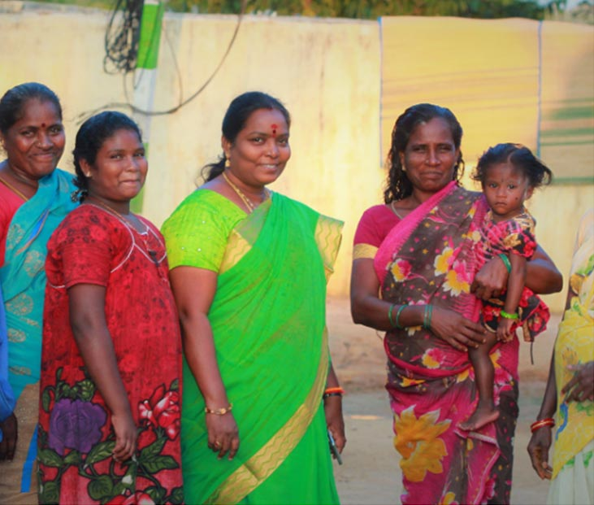
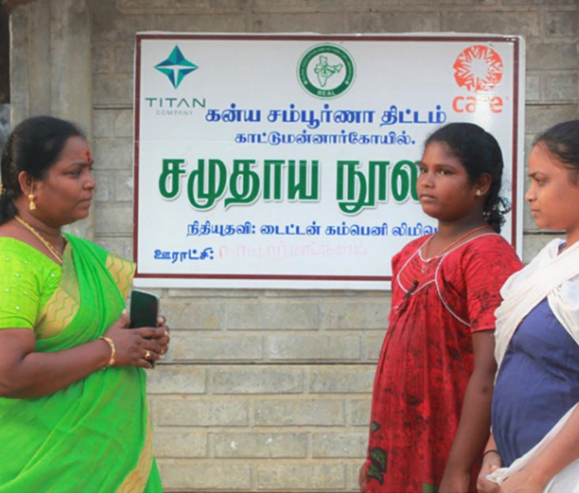

Former teacher, Sudha Manirathanam chose to leave her plush job to make a difference in her Nattarmangalam panchayat in Kattumanarkoil block. She has worked for her village as a ‘model panchayat’ when it comes to women’s rights and the survival of daughters. Under her guidance, her village won many awards. A member from the Nattarmangalam panchayat says “It is we women who understand the basic needs of the village. We are the ones who know the problems relating to water, the health of women and children, facilities in schools, ration cards, roads, and so on. When a woman is a sarpanch, these problems are addressed. “ Sudha adds that Kanya Sampurna Project from CARE India has empowered adolescent girls and has created leaders out of ordinary girls. She greatly acknowledges the role of leadership training, career counselling and civic awareness programmes. Her panchayat was facing issues at a different level in Anganwadi centres, community library, ante-natal and post-natal maternal care. Community members had next to no reading habit and through community action group meeting conducted by CARE India, she was able to emphasise the importance of reading books apart from their textbooks. Sudha states that the game-changer was the setting up of the community library and saw a change in the behaviour of the people. She was striving for her community’s holistic development by raising her voice for the effective functioning of Anganwadi centres at her village and thanks CARE India for their support. Capacity building for this Natarmangalam sarpanch has supported her work towards menstrual hygiene awareness and preschool education support. Her vision and commitment for better implementation of schemes at the grass-root level are creditable.
 The Kanya Sampoorna Project is a multi-thematic intervention through Heath, Education and Livelihoods, focused on the girl child, and aims at systemic and lasting change.